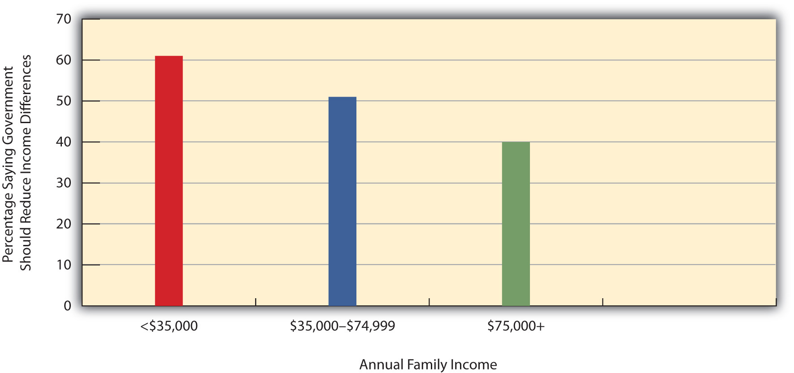

Why is stratification so common? Is it possible to have a society without stratification? Sociologists trying to answer these questions have developed two very different macro explanations of stratification, while symbolic interactionists have examined the differences that stratification produces for everyday interaction. Table 8.1 "Theory Snapshot" summarizes these three approaches.
Table 8.1 Theory Snapshot
| Theoretical perspective | Major assumptions |
|---|---|
| Functionalism | Stratification is necessary to induce people with special intelligence, knowledge, and skills to enter the most important occupations. For this reason, stratification is necessary and inevitable. |
| Conflict | Stratification results from lack of opportunity and from discrimination and prejudice against the poor, women, and people of color. It is neither necessary nor inevitable. |
| Symbolic interactionism | Stratification affects people’s beliefs, lifestyles, daily interaction, and conceptions of themselves. |
Recall from Chapter 1 "Sociology and the Sociological Perspective" that functionalist theory assumes that the various structures and processes in society exist because they serve important functions for society’s stability and continuity. In line with this view, functionalist theorists in sociology assume that stratification exists because it also serves important functions for society. This explanation was developed more than 60 years ago by Kingsley Davis and Wilbert Moore (Davis & Moore, 1945)Davis, K., & Moore, W. (1945). Some principles of stratification. American Sociological Review, 10, 242–249. in the form of several logical assumptions that imply stratification is both necessary and inevitable. When applied to American society, their assumptions would be as follows:
As this example suggests, many people might not choose to become brain surgeons unless considerable financial and other rewards awaited them. By extension, we might not have enough people filling society’s important jobs unless they know they will be similarly rewarded. If this is true, we must have stratification. This all sounds very logical, but a few years after Davis and Moore published their functionalist theory of stratification, other sociologists pointed out some serious problems in their argument (Tumin, 1953; Wrong, 1959).Tumin, M. M. (1953). Some principles of stratification: A critical analysis. American Sociological Review, 18, 387–393; Wrong, D. H. (1959). The functional theory of stratification: Some neglected considerations. American Sociological Review, 24, 772–782.
First, it is difficult to compare the importance of many types of jobs. For example, which is more important, doing brain surgery or mining coal? Although you might be tempted to answer “brain surgery,” if no coal were mined, much of our society could not function. In another example, which job is more important, attorney or professor? (Be careful how you answer this one!)
Second, the functionalist explanation implies that the most important jobs have the highest incomes and the least important jobs the lowest incomes, but many examples, including the ones just mentioned, counter this view. Coal miners make much less money than physicians, and professors, for better or worse, earn much less on the average than lawyers. A professional athlete making millions of dollars a year earns many times the income of the president of the United States, but who is more important to the nation? Elementary school teachers do a very important job in our society, but their salaries are much lower than those of sports agents, advertising executives, and many other people whose jobs are far less essential.
Third, the functionalist view also implies that people move up the economic ladder based on their abilities, skills, knowledge, and, more generally, their merit. If this is true, another implication is that if they do not move up the ladder, they lack the necessary merit. This view ignores the fact that much of our stratification stems from lack of equal opportunity, as our Monopoly example at the beginning of the chapter made clear. Because of their race, ethnicity, gender, and class standing at birth, some people have less opportunity than others to acquire the skills and training they need to fill the types of jobs addressed by the functionalist approach.
Finally, the functionalist explanation might make sense up to a point, but it does not justify the extremes of wealth and poverty found in the United States and other nations. Even if we do have to promise higher incomes to get enough people to become physicians, does that mean we also need the amount of poverty we have? Do CEOs of corporations really need to make millions of dollars per year to get enough qualified people to become CEOs? Don’t people take on a CEO job or other high-paying job at least partly because of the challenge, working conditions, and other positive aspects they offer? The functionalist view does not answer these questions adequately.
Conflict theory’s explanation of stratification draws on Karl Marx’s view of class societies and incorporates the critique of the functionalist view just discussed. Many different explanations grounded in conflict theory exist, but they all assume that stratification stems from a fundamental conflict between the needs and interests of the powerful, or “haves,” in society and those of the weak, or “have-nots” (Kerbo, 2009).Kerbo, H. R. (2009). Social stratification and inequality. New York, NY: McGraw-Hill. The former take advantage of their position at the top of society to stay at the top, even if it means oppressing those at the bottom. At a minimum, they can heavily influence the law, the media, and other institutions in a way that maintains society’s class structure.
In explaining stratification, conflict theory emphasizes ideologyA set of beliefs that supports the status quo., or a set of ideas that justifies the status quo. This emphasis goes back to the work of Marx, who said the ruling class shapes and even controls the ruling ideas of a society. It tries to shape these ideas so that they justify the existing order and decrease the chances that the poor will challenge it. The key goal of the ruling class here is to prevent the poor from achieving class consciousnessAn awareness of one’s social class membership, the structural reasons for it, and the needs arising from such membership., or an awareness of their oppression and the true reasons for it (Marx & Engels, 1947).Marx, K., & Engels, F. (1947). The German ideology. New York, NY: International Publishers. If the poor instead do not recognize their interests as a class that does not control the means of production, they suffer from false consciousnessA failure to possess class consciousness..
As an example, Marx called religion the “opiate of the masses.” By this he meant that religious beliefs influence the poor to feel that their fate in life is God’s will or a test of their belief in God. If they hold such beliefs, they will neither blame their poverty on the rich nor rebel against them. Religious beliefs help create false consciousness.
Ideological beliefs bolster every system of stratification and domination. In slave societies, the dominant ideology, and one that at least some slaves accepted, was that slaves are inferior to their masters and deserve no better fate in life. When U.S. slavery existed in the South, it was commonly thought that blacks were biologically inferior and suited only to be slaves. Caste societies, as we noted earlier, have similar beliefs that justify the existence and impact of the caste system. Hitler’s “final solution” likewise rested on the belief that Jews and other groups he targeted were biologically inferior and deserving of extermination.

Because he was born in a log cabin and later became president, Abraham Lincoln’s life epitomizes the American Dream, the belief that people born into poverty can become successful through hard work. The popularity of this belief leads many Americans to blame poor people for their poverty.
Source: Photo courtesy of U.S. Library of Congress, http://www.loc.gov/pictures/resource/cph.3a53289.
Ideological beliefs in class societies are more subtle and complex but nonetheless influential. One of the most important beliefs in the United States is the American Dream, epitomized by the story of Abraham Lincoln. According to this belief, people born into poverty can lift themselves up by the bootstraps and become successful if they work hard enough. By implication, if people remain poor, they are not trying hard enough or have other personal deficiencies keeping them in poverty. This ideology prompts many Americans to take a blaming-the-victim approach (see Chapter 1 "Sociology and the Sociological Perspective") by blaming poverty on laziness and other problems in the poor rather than on discrimination and the lack of opportunity in society. To the extent that people accept such ideological beliefs, they are less likely to criticize the existing system of stratification. Marx did not foresee the extent to which these beliefs would impede the development of class consciousness in the United States.
International data underline this American ideology. We saw in Chapter 3 "Culture" that about 60% of Americans attribute poverty to laziness and lack of willpower, compared to less than half that in Mexico, Russia, Spain, and Sweden. Belief in the American Dream evidently helps lead to a blaming-the-victim ideology that blames the poor for their own fate.
Conflict theory assumes that class position influences our perceptions of social and political life, even if not to the degree envisioned by Marx. Some national survey data support this assumption. A General Social Survey question asks whether it is the government’s responsibility to “reduce income differences between the rich and poor.” As Figure 8.2 "Annual Family Income and Belief That Government “Should Reduce Income Differences Between the Rich and Poor”" shows, low-income people are much more likely than high-income people to think the government has this responsibility.
Figure 8.2 Annual Family Income and Belief That Government “Should Reduce Income Differences Between the Rich and Poor”
Source: Data from General Social Survey, 2006.
Consistent with its micro orientation, symbolic interactionism tries to understand stratification by looking at people’s interaction and understandings in their daily lives. Unlike the functionalist and conflict views, it does not try to explain why we have stratification in the first place. Rather, it examines the differences that stratification makes for people’s lifestyles and their interaction with other people.
One of the most insightful analyses of stratification that fits into a symbolic interactionist framework was Thorstein Veblin’s (1899/1953)Veblen, T. (1953). The theory of the leisure class: An economic study of institutions. New York, NY: New American Library. (Original work published 1899) famous discussion of conspicuous consumption, or the acquisition and display by the wealthy of lavish products that show off their wealth. The very rich do not need mansions or other very opulent homes, and neither do they need a motor vehicle costing upward of $100,000 or more or jewelry costing thousands and thousands of dollars. Yet they purchase these products to show off their wealth and to feel better about themselves. The lifestyles of the rich are featured in classic novels by writers such as F. Scott Fitzgerald and in classic films such as The Philadelphia Story, starring the formidable trio of Katharine Hepburn, Cary Grant, and James Stewart. Although one message of many of these cultural works is that money does not always bring happiness, it remains true, as Fitzgerald once wrote, “Let me tell you about the very rich. They are different from you and me.”
Examples of the symbolic interactionist framework are also seen in the many literary works and films that portray the difficulties that the rich and poor have in interacting on the relatively few occasions when they do interact. For example, in the film Pretty Woman, Richard Gere plays a rich businessman who hires a prostitute, played by Julia Roberts, to accompany him to swank parties and other affairs. Roberts has to buy a new wardrobe and learn how to dine and behave in rich social settings, and much of the film’s humor and poignancy come from her awkwardness in learning the lifestyle of the rich.
If there are many dramatic and humorous accounts of the “lifestyles of the rich and famous,” there are also many sociological and other accounts of lives of the poor. Poverty is discussed later in this chapter, but for now it is sufficient to say that the poor often lead lives of quiet desperation and must find many ways of coping with the fact of being poor. Studies of the poor, too, reflect the symbolic interactionist perspective.